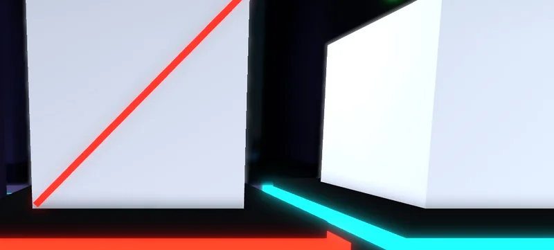
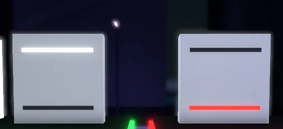
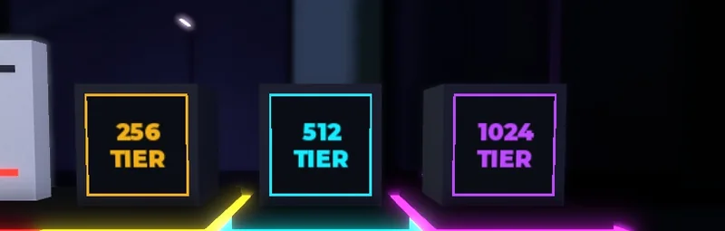

About this guide’s evidence
Reviewed against the linked Roblox documentation and published MeshMogul product limits. Recommendations and example scenes are guidance, not measured results. This review date does not represent a new native Studio test. Current UI details that still need confirmation are called out in the text.
Quick Takeaways
- Why it matters: Roblox's lighting shader computes surface brightness from per-corner vertex normals and MikkTSpace tangent vectors, not from raw triangle positions alone .
- How it affects your creations: Sharing one averaged normal across a sharp 90° edge smudges dark gradients across flat walls; importing DirectX (
Y-) normal maps inverts recessed grooves because Roblox expects OpenGL (Y+) ; and oversized textures or liveEditableImagebuffers waste device memory . - What you can actually do about it: Split normals along hard architectural corners while smoothing curved rings, export normal maps in OpenGL (
Y+) with tangents intact, audit shading under a low grazing sun, and size textures to stud scale (256,512,1024).
Visual field note / 05
Read the surface, then budget the texture
01 · edges and shading

Inspect hard corners for unexpected smoothing across faces.
02 · normal-map direction

A flipped green channel reverses the vertical lighting cue.
03 · texture budget

256, 512, and 1024 are example tiers; choose for screen size.
Few visual bugs feel more unfair than importing or baking a crisp, flat-sided wall—only to see dark, muddy diagonal shadows smeared across the flat plastic faces as if someone rubbed soot across your map.
And right beside that problem sits another common surprise: a room with just 4,000 triangles runs smoothly on a desktop PC, yet starts hitching or crashing on mid-range phones because twenty tiny props are carrying 4096×4096 PBR texture sets.
Both issues live in the invisible surface data attached to your triangles: Vertex Normals, Tangent-Space Normal Maps, and UV Texel Budgets.
1. Why Flat Walls Look Smudged: Averaged vs. Split Planar Normals
At every corner of a triangle, a mesh stores a directional unit arrow called a Vertex Normal. Think of it as a tiny periscope telling the lighting shader which direction that corner of the surface faces toward the sun.
Now picture two flat walls meeting at a sharp 90° corner:
- Wall A faces strictly North (0, 0, -1).
- Wall B faces strictly East (1, 0, 0).
What happens along the vertical seam where those two walls touch?
- Averaged Normals (Smooth Shading Across a Hard Edge):
If both walls share one single averaged normal pointing North-East(0.707, 0, -0.707)along that corner edge, the shader assumes you want a smooth curved bend like a pipe! It interpolates lighting continuously across the flat triangles—creating a dark diagonal smudge from corner to corner across what ought to be a razor-flat wall. - Split Planar Normals (Sharp Edges Without Extra Positions):
To keep flat faces crisp, the triangle corner belonging to Wall A needs a normal pointing strictly North(0, 0, -1), while the triangle corner at that exact same 3D position belonging to Wall B needs a separate normal pointing strictly East(1, 0, 0).
In Roblox's EditableMesh model (AddNormal / SetFaceNormals), normal IDs are assigned per triangle corner independently of vertex position IDs (AddVertex):
- A flat-sided Block only needs 8 vertex positions and 6 planar normal vectors (one per face) to render crisp 90° edges with zero diagonal shading smudges.
- A Cylinder needs smooth radial normals around its curved barrel rings so the body looks round, paired with strict planar normals on the top and bottom cap corners so the flat circular ends don't puff out like cushions.
2. The "Inverted Bump" Trap: OpenGL (Y+) vs. DirectX (Y-) Normal Maps
When you attach a SurfaceAppearance or MaterialVariant with a Normal Map to fake mortar lines, rivets, or wood grain, the GPU tilts each pixel's shading normal using the RGB channels of that image.
Per Roblox's Onboarding for Artists and Texture Specifications:
- Roblox uses a Metalness and Roughness PBR pipeline with OpenGL tangent-space (Y+) normal maps and a MikkTSpace tangent basis.
- In OpenGL (Y+), the Green channel points Up (+Y).
- In DirectX (Y-), the Green channel points Down (-Y)—inverted!
- Also make sure your exported 3D mesh actually includes tangents (generated with MikkTSpace in Blender or your authoring app); without mesh tangents, normal maps on a SurfaceAppearance can fail to render detail correctly .
How to spot a DirectX normal map in 5 seconds: Shine overhead sunlight onto a brick wall. If mortar seams between bricks catch bright light on their top edge and shadow on their bottom edge—looking like puffy raised ridges instead of carved grooves—the Green channel is inverted (Y-). Flip the Green channel (or re-export as OpenGL Y+) and reupload.
3. Texture Streaming vs. Stud-Based Texture Budgets
Roblox automatically enables Texture Streaming for MeshPart, SurfaceAppearance, MaterialVariant, Decal, Texture, and built-in materials (Textures and Decals). As players move through an experience, the client loads lower-resolution mipmaps first and streams higher resolutions based on screen-space size and available device memory.
Why You Should Still Size Textures Before Uploading
Even with mipmap streaming, Roblox's Texture Specifications recommend sizing textures to the asset's stud footprint before uploading to improve memory efficiency and keep texel density consistent across your map:
| Object Footprint in Studs | Recommended Texture Resolution | Typical Studio Assets |
|---|---|---|
~5×5 studs or smaller |
256×256 px |
Handheld props, cups, tools, small wall switches. |
~10×10 studs |
512×512 px |
Doors, wooden crates, chairs, barrels, medium boulders. |
~20×20 studs |
1024×1024 px |
Modular building bays, vehicles, large statues. |
| Built-in Engine Baseline | 1024×1024 per 8×8 studs (Parts) / 512×512 per 8×8 studs (Terrain) |
Default Roblox built-in material tiling density. |
Roblox accepts uploads up to 4096×4096, and reserves high resolutions for massive hero focal assets rather than 2-stud tabletop clutter.
The EditableImage Uncompressed Memory Exception
Normal cloud rbxassetid:// textures benefit from GPU texture compression and mipmap streaming. By contrast, an in-memory EditableImage bound to TextureContent lives inside the client device's strict runtime editable memory budget during live gameplay (whereas Studio Edit mode and servers are far less constrained) . Use EditableImage for genuine runtime drawing or procedural texture synthesis—not for static wall and prop textures that could be normal published image assets.
4. The 3-Minute Studio Shading & Texture Audit
Run this quick three-step check before signing off on any new mesh:
- Run the Grazing-Light Clay Check: On a duplicate copy, set the mesh to neutral grey
SmoothPlastic(Color = 160, 160, 160,Reflectance = 0). Select Lighting in Explorer and sweepClockTimeslowly from6.5to17.5. Flat walls should illuminate cleanly without dark diagonal wedges, and normal-mapped grooves should recess inward under overhead light. - Audit
DoubleSidedUsage: Orbit inside walls and underneath surfaces. Only enableMeshPart.DoubleSided = trueon genuinely paper-thin two-sided surfaces (foliage cards, banners, single-pane glass)—enablingDoubleSidedon closed solid meshes forces the GPU to shade backfaces for zero visual benefit. - Keep
SurfaceAppearanceChannels Lean:SurfaceAppearance.ColortintsColorMapmultiplicatively (separately fromMeshPart.Color), so keep baseColorMapneutral/bright when planning Studio color variations. Leave unused slots (MetalnessMapon pure stone or fabric) empty instead of uploading dummy white or black images.
Where MeshMogul fits: When converting supported Studio primitives and compatible assemblies, MeshMogul emits split planar normals on flat faces (
Block,Wedge,CornerWedge, cylinder end caps) and smooth radial normals on curved surfaces (Cylinderbarrels andBalls) so Studio builds don't develop blotchy corner shading after conversion.
Sources and technical references
- Texture specifications
- Onboarding
- SurfaceAppearance API reference
- Textures decals
- EditableMesh API reference
- EditableImage API reference
Keep building
Before this guide: Turn Roblox Parts Into a Mesh